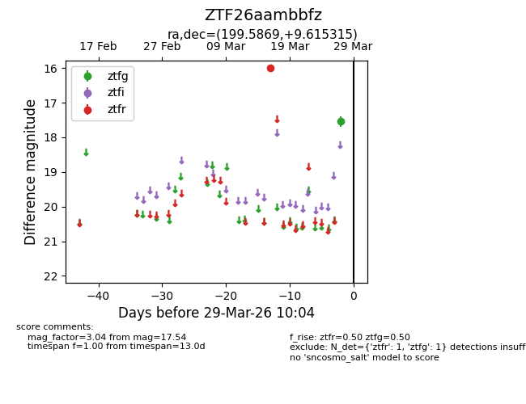
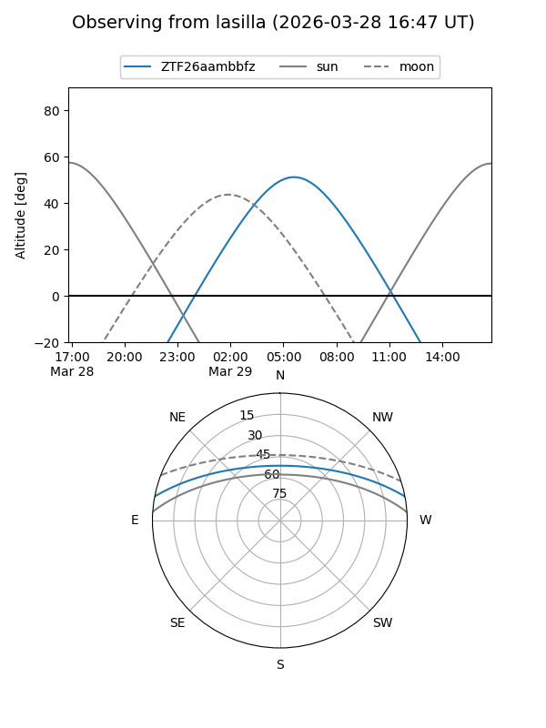
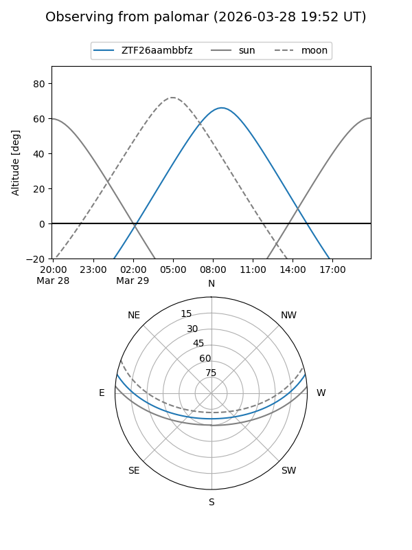

ZTF26aambbfz
Target ZTF26aambbfz at 2026-03-29 10:06
Aliases and brokers:
FINK: link
Lasair: link
ALeRCE: link
alt names
ZTF26aambbfz (ztf,fink_ztf)
Coordinates:
equatorial (ra, dec) = 199.5869,+9.61531
equatorial (HMS+DMS) = 13:18:20.85,+09:36:55.13
galactic (l, b) = (324.1288,+71.37108)
Flags:
Photometry:
last ztfg=17.54, ztfr=15.99
1 ztfg, 1 ztfr detections
Lightcurve

Visibility


Additional plots